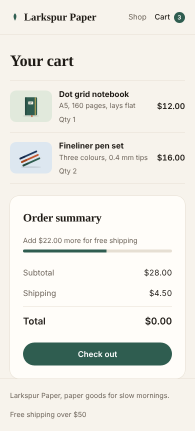

Tests for code you never tested
Repeval tests your app inside your own GitHub Actions: it reads your code there, writes the tests, runs them and hands back a screenshot of every page. Your code never comes to us, and we keep no database.
- Free and open source
- Your code never leaves GitHub
- No database, nothing stored
- No AI required
Six steps, nothing hidden
Every run goes through the same six steps on a fresh GitHub machine. You can watch each one happen, and every result is explained in plain words.
- Collect
GitHub copies your repo onto a temporary machine. Repeval itself never receives your code.
Skips
node_modules, build output and binaries. - Understand
Reads your stack, every exported function, every page and API endpoint, and how to start the app.
Next.js, Vite, Express, Fastify, Hono, SvelteKit, Remix, React Router.
- Plan
Decides what to test. Anything it can't test yet is listed with the reason, never silently dropped.
Example: "/products/:id needs example IDs".
- Make tests
Writes real test files: Vitest for your functions, Playwright for your pages and API.
Your own files are never changed.
- Run
Starts your app, opens every page in a real browser and takes a screenshot at desktop and phone width.
Possible bugs are reported, never hidden by weakening a test.
- Results
Hands back a report with every test, every screenshot and the test files to keep.
Saved in your repo for 7 days, then deleted.
Proof you can open
This is a real run on the demo shop from the examples folder. Every page was opened in a browser, and one of them had a bug nobody had noticed.


The cart page throws an error in the browser
The page loads, but its script uses cartTotal, which doesn't exist, so the total never updates. Visitors would see "Total: $0".

Tests you can keep
Every test Repeval writes is a normal file. Download the ones you like and commit them, and they keep checking your app on every change.
// tests/e2e/pages.spec.ts, written by Repeval test("page /cart loads", async ({ page }) => { const { response, errors, screenshot } = await openPage(page, "/cart", "cart"); await screenshot('desktop'); await page.setViewportSize({ width: 390, height: 844 }); await screenshot('mobile'); expect(response?.status() ?? 0, 'HTTP status').toBeLessThan(400); expect(errors, 'browser errors on this page').toEqual([]); });
Your code stays in GitHub
Runs happen inside your own repo's GitHub Actions. The website starts them and shows the results. It has no database and no permission to read your code.
Who can see my code?
Only GitHub. The tests run on a temporary machine in your own GitHub account, which is deleted when the run ends. The Repeval website only sees your repo names and the run's results, and it doesn't keep those either. Sign out and nothing about you remains.
Repeval can
- See the names of repos you allow
- Start the Repeval workflow when you press Run
- Read that run's progress and report
Repeval can't
- Read your source code
- Push commits, edit files or open pull requests
- See your secrets, like an AI key
- Keep anything after you sign out
# .github/workflows/repeval.yml (you add this file yourself) on: workflow_dispatch: # runs only when you start it permissions: contents: read # can read, never write jobs: repeval: runs-on: ubuntu-latest # a fresh machine, deleted after steps: - run: npx --yes repeval@0.1.0 analyze - run: npx --yes repeval@0.1.0 test - uses: actions/upload-artifact@v4 # report kept 7 days
Or run it in your terminal
The website and the command line run exactly the same steps. Locally, nothing leaves your computer at all.
$ npx repeval run ① Collect files Scanned 3 source files, 0 existing tests ② Understand the repo Stack javascript, Express Pages / /about /cart /help.html /products/:id Start npm run start (port 4310) ③ Plan Targets 9 of 13: 3 unit, 4 pages, 2 API ④ Make tests Wrote 4 test files in .repeval/ ⑤ Run ⑥ Results 10 passed 1 possible bugs 0 broken tests 4 skipped × page /cart loads · browser errors on this page: cartTotal is not defined Report: repeval-report/index.html
From the website
- Sign in with GitHub
- Pick a repo
- Add one workflow file (you read it, you commit it)
- Press Run and watch the board
Free for public repos. Private repos use the Actions minutes included with your GitHub plan.
Sign in with GitHubQuestions people ask first
Catch it before your users do
Point Repeval at a repo you've never tested. Free, open source, and your code never leaves GitHub.